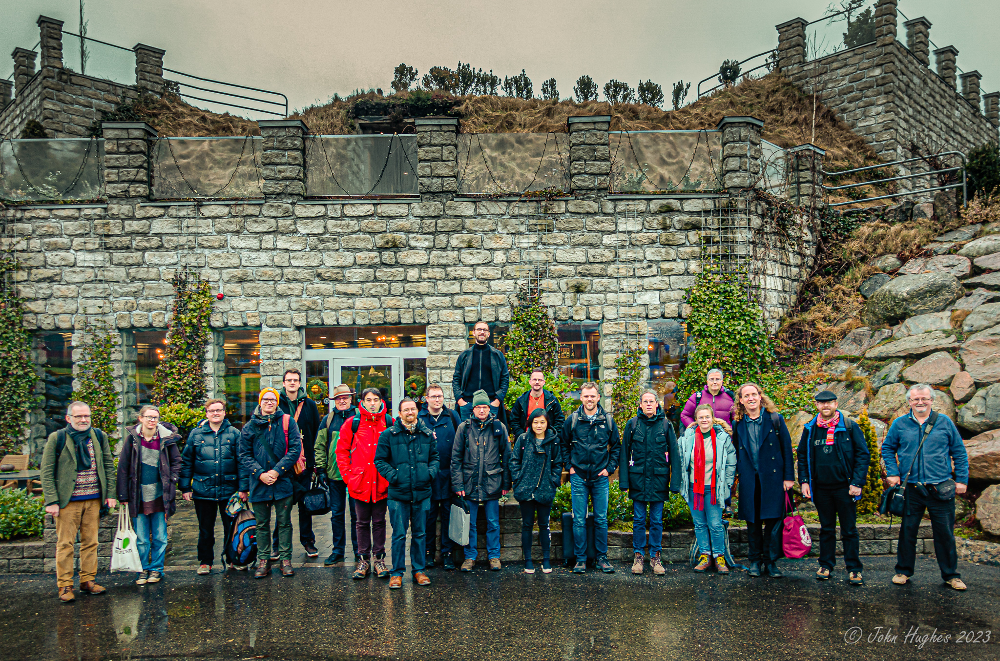

Home
Welcome to the Functional Programming group!

Members (TODO)
-
Aarne Ranta, Professor
-
Alex Gerdes, Senior Lecturer
-
Carl-Johan (Carl) Seger, Research Professor
-
Jean-Philippe Bernardy, Senior Lecturer
-
John Hughes, Professor
-
Koen Claessen, Professor
-
Krasimir Angelov, Associate Professor
-
Mary Sheeran, Professor
-
Patrik Jansson, Professor
-
Peter Ljunglöf, Associate Professor
-
Robert Krook, PhD Student
-
Yinan Yu, Assistant Professor

Earlier seminar series
During 2020 we organized The Chalmers Online
Functional Programming Seminar Series which, for historic reasons,
has its own page.
Posts